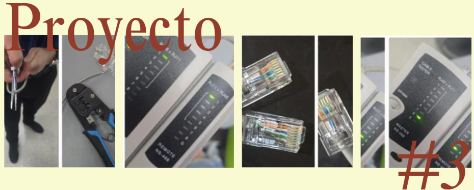
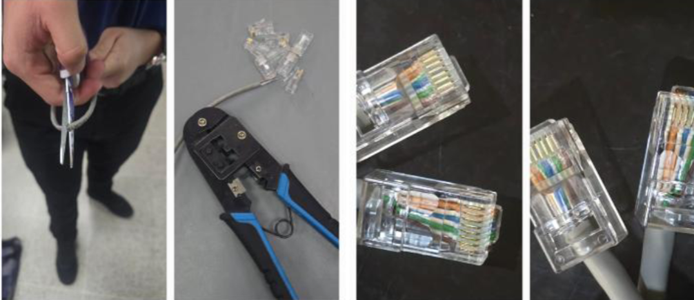

Proyecto Parcial - Cables de Red
Este proyecto consiste en aprender a fabricar cables de red tipo patchcord, tanto directo como cruzado, utilizando cable UTP y herramientas profesionales, donde debemos cortar, pelar, ordenar los cables según las normas T568A y T568B, realizar el ponchado de los conectores RJ45 y luego verificar su correcto funcionamiento con un tester,, para finalmente documentar todo el proceso en un informe que evidencie lo realizado y los resultados obtenidos.
El objetivo es construir correctamente un cable directo y un cable cruzado utilizando cable UTP, conectores RJ45 y herramientas de ponchado, aplicando las normas T568A y T568B para comprobar su funcionamiento mediante el uso de un tester de red.
El proyecto se realizó utilizando cable UTP, conectores RJ45 y herramientas profesionales de ponchado. Primero se cortó el cable en dos partes iguales y se retiró cuidadosamente la cubierta exterior utilizando el pelacables, evitando dañar los hilos internos. Luego se separaron y ordenaron los pares de cables según las normas correspondientes.
Para el cable directo se utilizó la norma T568B en ambos extremos, mientras que para el cable cruzado se utilizó la norma T568A en un extremo y la norma T568B en el otro. Después de organizar los colores correctamente, se cortaron las puntas de los cables de forma recta y se introdujeron dentro del conector RJ45 asegurándose de que llegaran hasta el fondo del conector.
Posteriormente se utilizó la ponchadora para fijar los conectores RJ45 al cable aplicando presión hasta asegurar el cierre correcto. Finalmente, ambos cables fueron probados con un tester de red para verificar su funcionamiento y confirmar que las conexiones coincidieran correctamente según el tipo de cable fabricado.

